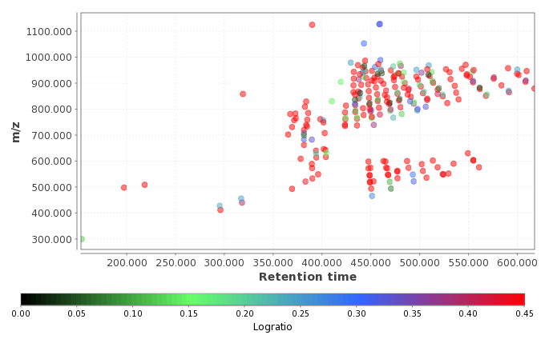

The coefficient of variation (CV) is a normalized measure of dispersion of a probability distribution. It is defined as the ratio of the standard deviation to the mean. (http://en.wikipedia.org/wiki/Coefficient_of_variation)
The advantage of the CV is that it is unitless. This allows CVs to be compared to each other in ways that other measures, like standard deviations or root mean squared residuals, cannot be. The standard deviations of two variables, while both measure dispersion in their respective variables, cannot be compared to each other in a meaningful way to determine which variable has greater dispersion because they may vary greatly in their units and the means about which they occur. The standard deviation and mean of a variable are expressed in the same units, so taking the ratio of these two allows the units to cancel. This ratio can then be compared to other such ratios in a meaningful way: between two variables (that meet the assumptions outlined below), the variable with the smaller CV is less dispersed than the variable with the larger CV. (http://www.ats.ucla.edu/stat/mult_pkg/faq/general/coefficient_of_variation.htm)
This analysis shows a difference of each peak between two groups of samples. It is
defined as the ratio of the natural logarithm of the ratio of each group
average to the natural logarithm of 2:
logratio = ln(groupOneAverage / groupTwoAverageg) / ln(2)
CV plot:

Logratio plot: